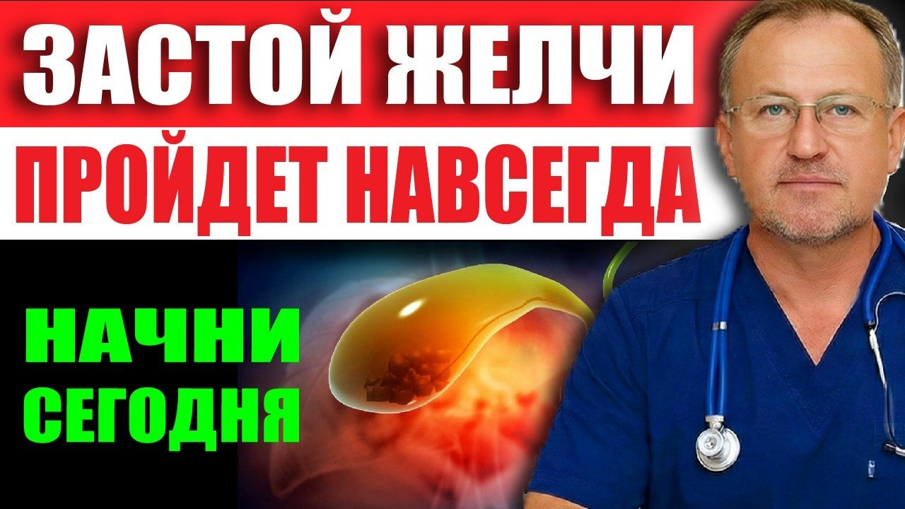
Материалы к выпуску
Желчь потечет как миленькая! Инструкция по восстановлению оттока желчи за 7 дней
Здесь протокол из этого выпуска. Скачайте и распечатайте — так проще не забывать о главном каждый день.
Снимаем застой желчи
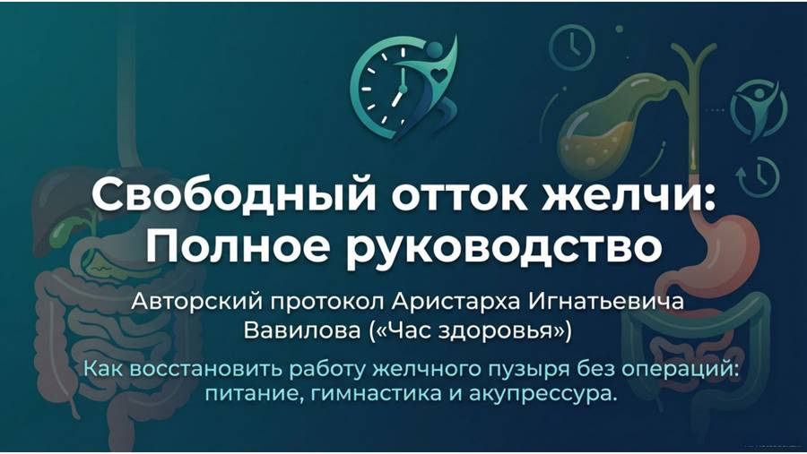
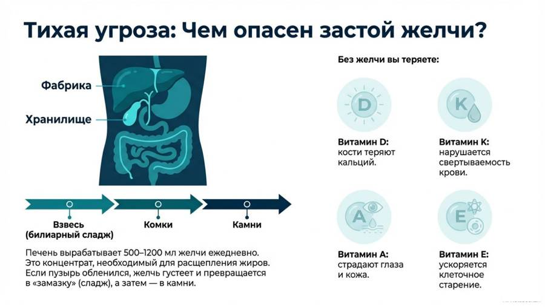
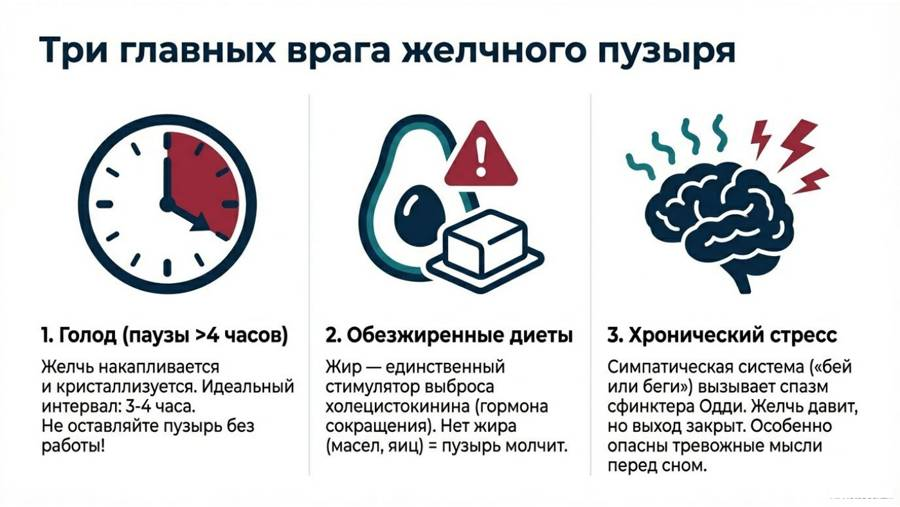
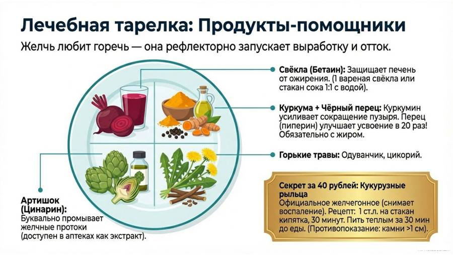
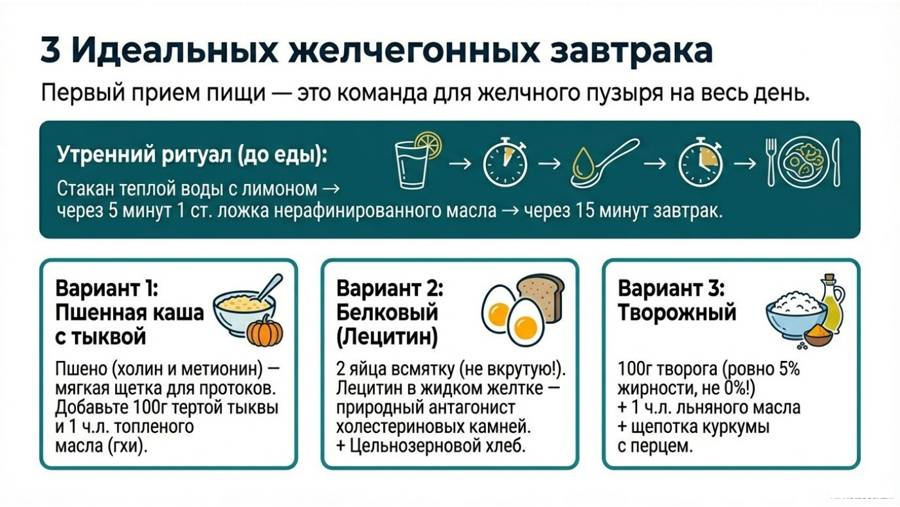
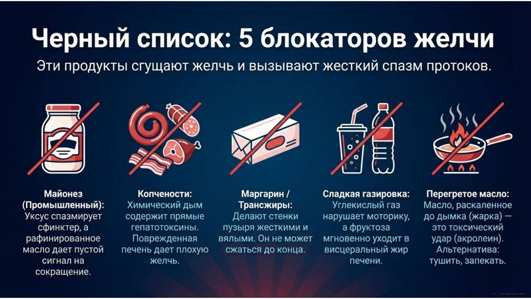
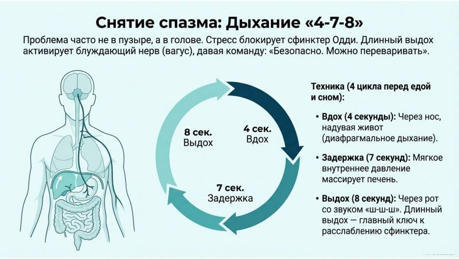
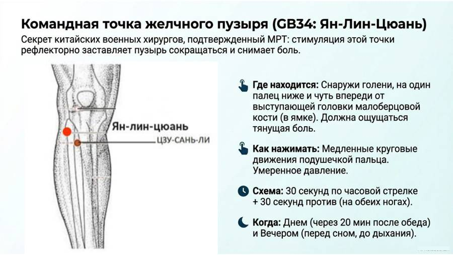
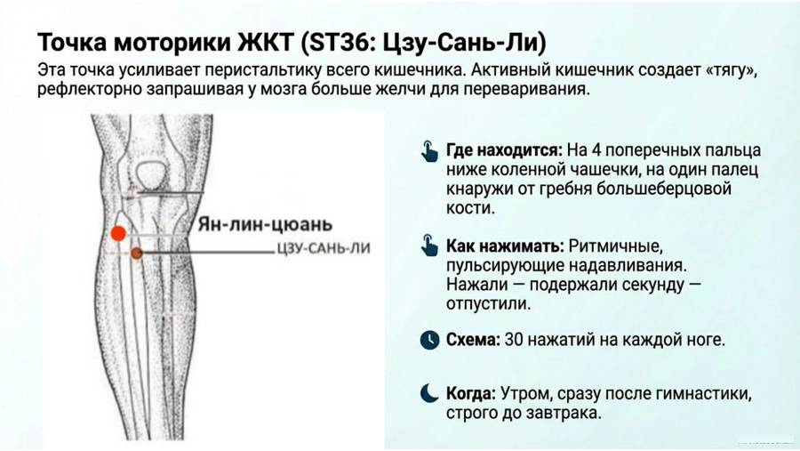
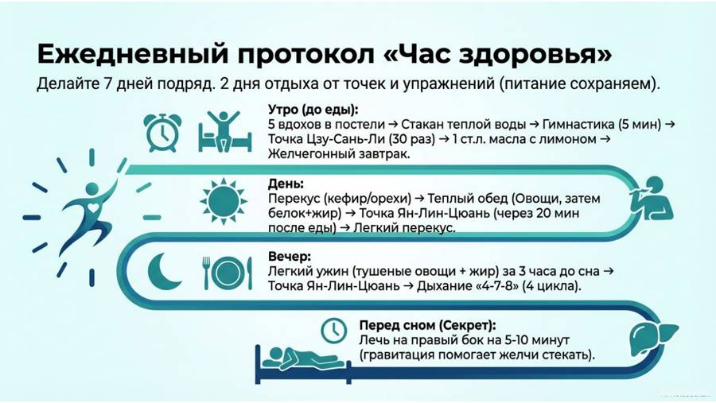
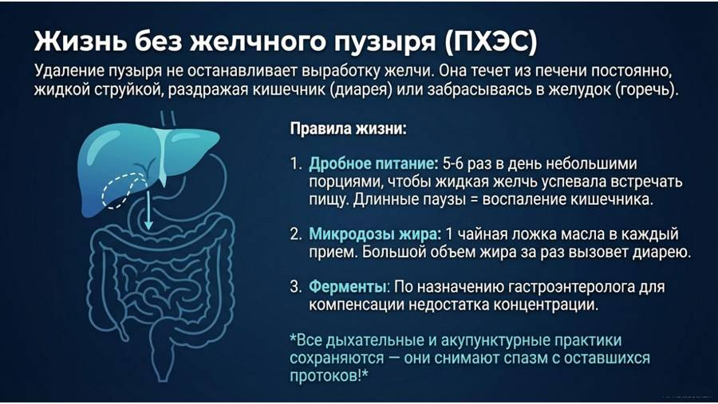
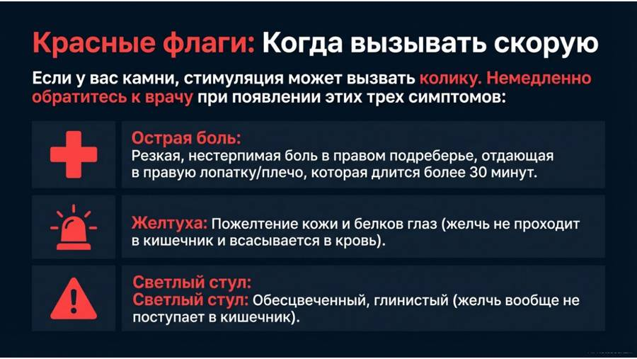
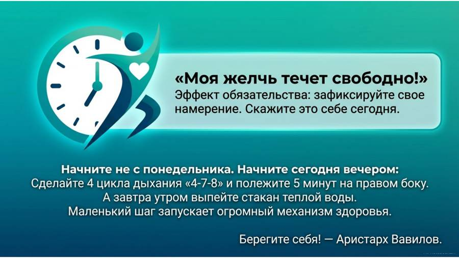
Новые выпуски и карточки — первыми в нашем Telegram-канале.
Открыть Telegram